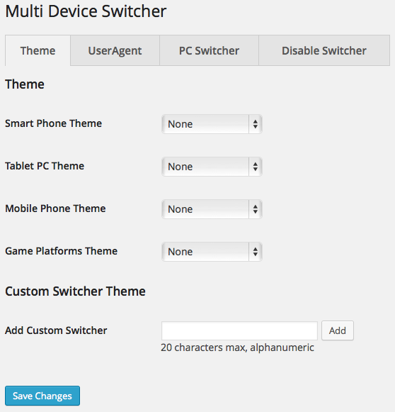
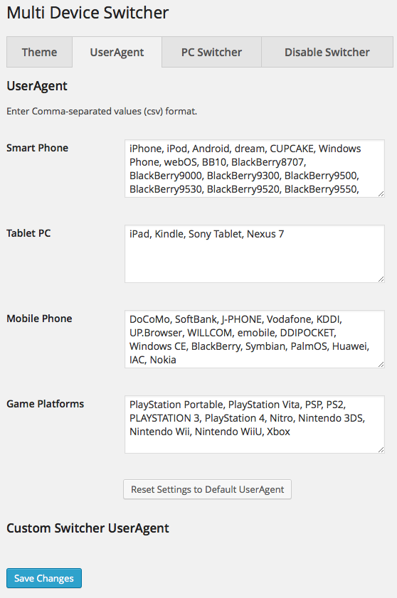
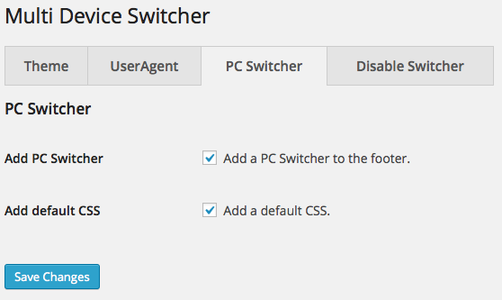
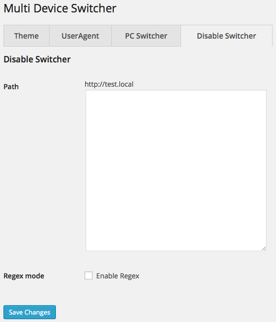

This WordPress plugin allows you to set a separate theme for device (Smart Phone, Tablet PC, Mobile Phone, Game and custom). This plugin detects if your site is being viewed by UserAgent, and switches to selected theme. The Custom Switcher can add every device.
   
There are three ways how to Using the PC Switcher.
<?php if ( function_exists('multi_device_switcher_add_pc_switcher') ) { multi_device_switcher_add_pc_switcher(); } ?>
You can design the PC Switcher in the Style Sheet.
<div class="pc-switcher"><span class="active">Mobile</span><a href="http://DOMEIN/PATH/TO/?pc-switcher=1">PC</a></div>
<div class="pc-switcher"><a href="http://DOMEIN/PATH/TO/?pc-switcher=0">Mobile</a><span class="active">PC</span></div>
The Display Switcher Shortcode switch the content of the post or page through the detection of the device.
Add the shortcode [multi] in a post or page and use the device attribute to device name. if the device attribute is empty, detect the desktop PC.
device
(string | empty) The name of the device
if empty, detect the desktop PC
[multi]pc or other specific stuff here[/multi]
[multi device="smart"]smartphone specific stuff here[/multi]
[multi device="tablet"]tablet specific stuff here[/multi]
[multi device="test"]test Custom Switcher specific stuff here[/multi]
For theme or plugin developers. Filters The Display Switcher Shortcode through hooks. In that case, edit theme or plugin files.
<?php
echo do_shortcode('[multi device="smart"]smartphone specific stuff here[/multi]');
?>
The Disable Switcher disable the switching of the theme by a particular URL. If you match the access the url and a string or a regular expression (Regex mode), disable the switching of the theme. Regex mode is for advanced users.
/sample-page
/2015/01/hello-world
\/sample\-
\/2015\/01
Multi Device Switcher set the Cookie that holds the state of the switch. You can get the Cookie and detect the device by JavaScript.
multi-device-switcher The name of the device is switched (value: null | device name)disable-switcher State of disabled (value: null | 1)pc-switcher State of the PC Switcher when switched (value: null | 1) <script src="http://DOMEIN/PATH/TO/jquery.cookie.js"></script>
<script>
(function($) {
$(function() {
if ( $.cookie( 'multi-device-switcher' ) == 'smart' ) {
/* smartphone specific stuff here */
} else if ( $.cookie( 'multi-device-switcher' ) == 'tablet' ) {
/* tablet specific stuff here */
} else {
/* pc or other specific stuff here */
}
});
})(jQuery);
</script>
is_multi_device() function is a boolean function, meaning it returns either TRUE or FALSE. Works through the detection of the device by the Multi_Device_Switcher class.
<?php is_multi_device('smart'); ?>
<?php
if ( function_exists( 'is_multi_device' ) ) {
if ( is_multi_device('smart') ) {
/* Display and echo smartphone specific stuff here */
} elseif ( is_multi_device('tablet') ) {
/* Display and echo tablet specific stuff here */
} else {
/* Display and echo pc or other specific stuff here */
}
}
?>
device name (required)
(string) The name of the device
(boolean) Return boolean whether a particular device.
is_pc_switcher() function is a boolean function, meaning it returns either TRUE or FALSE. Return the the state of PC Switcher by the Multi_Device_Switcher class. Return true if the theme has switched by the PC Switcher.
<?php is_pc_switcher(); ?>
<?php
if ( function_exists( 'is_pc_switcher' ) ) {
if ( is_pc_switcher() ) {
/* Theme switched by the PC Switcher. Display and echo specific stuff here */
} else {
/* Display and echo specific stuff here */
}
}
?>
None
(boolean) Return the state of PC Switcher.
is_disable_switcher() function is a boolean function, meaning it returns either TRUE or FALSE. Return the state of disabled by the Multi_Device_Switcher class.
<?php is_disable_switcher(); ?>
<?php
if ( function_exists( 'is_disable_switcher' ) ) {
if ( is_disable_switcher() ) {
/* Disabled. Display and echo specific stuff here */
} else {
/* Display and echo specific stuff here */
}
}
?>
None
(boolean) Return the state of disabled.
The Multi Device Switcher Command is command-line tool.
Add-on the Multi Device Switcher Command, when you activate the plugin "Multi Device Switcher". To use the Multi Device Switcher Command is WP-CLI required.
wp multi-device
Multi Device Switcher Command
wp multi-device <command>
add add Custom Switcher
css turn on/off default CSS
delete delete Custom Switcher
pc-switcher turn on/off PC Switcher
reset reset Settings to Default UserAgent
status get status of settings
theme get or switch a theme
useragent get or set UserAgent
For more information about the Multi Device Switcher Command, see wp help multi-device <SUBCOMMANDS>.
get status of settings
wp multi-device status
Active Theme: Twenty Fifteen | twentyfifteen
+--------------------------+-----------------+----------------+-------------------------------------------------------------------------+
| Device | Theme | Slug | UserAgent |
+--------------------------+-----------------+----------------+-------------------------------------------------------------------------+
| smartphone (Smart Phone) | Twenty Fourteen | twentyfourteen | iPhone, iPod, Android, dream, CUPCAKE, Windows Phone, webOS, BB10, Blac |
| | | | kBerry8707, BlackBerry9000, BlackBerry9300, BlackBerry9500, BlackBerry9 |
| | | | 530, BlackBerry9520, BlackBerry9550, BlackBerry9700, BlackBerry 93, Bla |
| | | | ckBerry 97, BlackBerry 99, BlackBerry 98 |
| tablet (Tablet PC) | Twenty Thirteen | twentythirteen | iPad, Kindle, Sony Tablet, Nexus 7 |
| mobile (Mobile Phone) | Twenty Twelve | twentytwelve | DoCoMo, SoftBank, J-PHONE, Vodafone, KDDI, UP.Browser, WILLCOM, emobile |
| | | | , DDIPOCKET, Windows CE, BlackBerry, Symbian, PalmOS, Huawei, IAC, Noki |
| | | | a |
| game (Game Platforms) | Twenty Eleven | twentyeleven | PlayStation Portable, PlayStation Vita, PSP, PS2, PLAYSTATION 3, PlaySt |
| | | | ation 4, Nitro, Nintendo 3DS, Nintendo Wii, Nintendo WiiU, Xbox |
+--------------------------+-----------------+----------------+-------------------------------------------------------------------------+
PC Switcher: on
default CSS: on
switch twentyfifteen in theme of smartphone using theme slug
wp multi-device theme smartphone twentyfifteen
set UserAgent in theme of tablet
wp multi-device useragent tablet 'iPad, Kindle, Sony Tablet, Nexus 7'
add example Custom Switcher
wp multi-device add example
add example Custom Switcher. set twentyfifteen theme and UserAgent using theme slug
wp multi-device add example twentyfifteen 'iPad, Kindle, Sony Tablet, Nexus 7'
delete example Custom Switcher
wp multi-device delete example
turn on default CSS
wp multi-device css on
Small patches and bug reports can be submitted a issue tracker in Github. Forking on Github is another good way. You can send a pull request.
Translating a plugin takes a lot of time, effort, and patience. I really appreciate the hard work from these contributors.
If you have created or updated your own language pack, you can send gettext PO and MO files to author. I can bundle it into Multi Device Switcher.
You can send your own language pack to author.